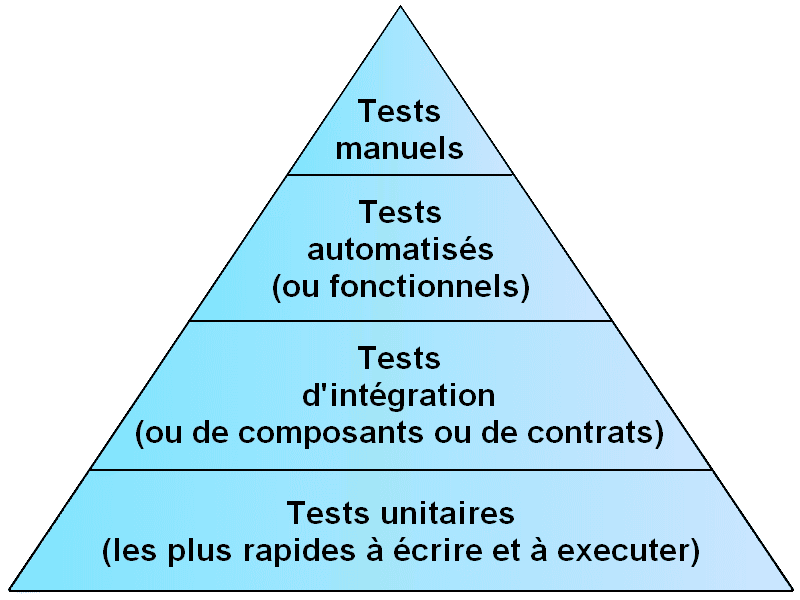

Les Tests Unitaires
Parce que tester c'est bien
Pourquoi tester ?
Pour commencer, selon vous c'est quoi un test ?
Quoi tester ?
Quels sont les différents niveaux de tests que l'on peut mettre en place ?
La pyramide des tests
Dans la pyramide ci-dessous, la base est la moins couteuse à mettre en place et a le retour le plus rapide, le sommet est le plus couteux, mais le plus proche de l'expérience utilisateur.
Quand tester ?
Il y a 2 approches majeures :
Principes du TLD
Sans surprise, pour le TLD, le but est d'écrire les tests après le développement. C'est l'approche la plus répandue, notamment pour le code ayant beaucoup d'historique (legacy code) et pour lequel aucun ou très peu de tests sont présents.
Principes du TDD
A l'inverse du TLD, l'approche TDD veut que les tests s'écrivent systématiquement avant le développement.
Voici les "lois" du TDD :
TDD vs TLD
TODOOOOOOMerci de votre attention
Des questions ?

Sources disponibles sur github.com/Jorg722